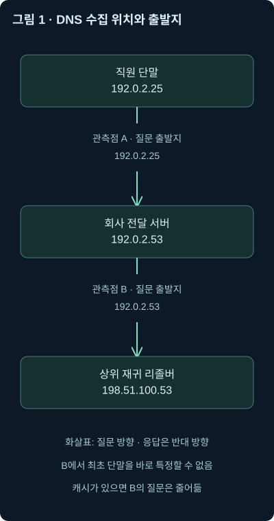
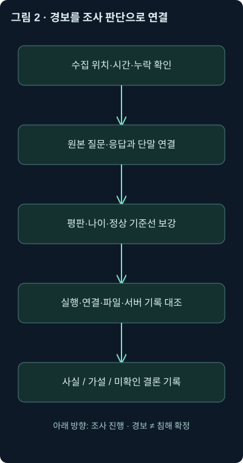
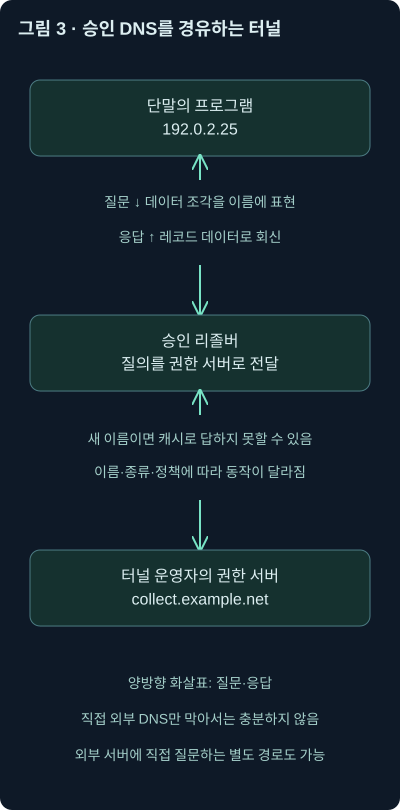
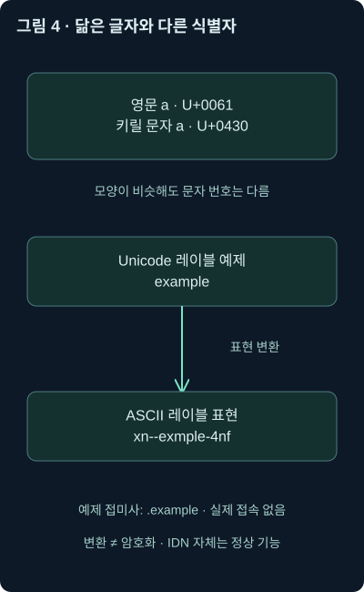
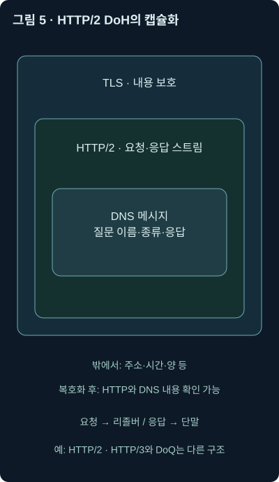

DNS 분석과 공격 징후 — 조회 기록에서 조사 판단까지
4강. 수집 위치·도메인 보강·비인가 DNS·터널링·유사 문자·암호화 DNS를 근거 중심의 조사로 연결합니다.
1. 주소를 알아봤다는 기록에서 무엇을 의심할 수 있을까요?
아침에 경보가 하나 들어왔습니다. 직원 컴퓨터가 평소 보지 못하던 이름을 DNS로 조회했다는 내용입니다. 이름은 길고, 숫자도 많이 섞여 있습니다. 바로 감염된 컴퓨터라고 판단해도 될까요?
잠깐만 멈춰보겠습니다. 3강에서 DNS는 이름에 해당하는 정보를 묻고 답하는 시스템이라고 배웠지요. 조회한 이름이 낯설다는 사실과, 악성 프로그램이 실행됐다는 결론 사이에는 아직 여러 단계가 남아 있습니다. 브라우저의 사전 조회, 보안 제품의 파일 검사, 사용자가 열지 않은 페이지에 포함된 자원 때문에도 DNS 질의가 생길 수 있습니다.
이번에는 정상 DNS의 구조를 이용해 조사하는 방법과, DNS 자체를 통신·우회·속임수에 사용하는 경우를 차례로 살펴보겠습니다. 로그 수집 위치에서 시작해 도메인의 맥락, 비인가 리졸버, DNS 관리 권한 탈취, 터널링, 국제화 도메인, 암호화 DNS까지 연결합니다. 다음 회차는 이 원리를 적용하는 자체 DNS 분석 실습입니다.
이 강의의 패킷 행·로그·회사 정책·경보 수치·도메인은 별도 표시가 없으면 모두 설명용 자체 가상 예제입니다. 주소는 문서용 범위이고 실제 운영 리졸버가 아닙니다. 실제 DNS 질의, 원본 패킷 파일 분석, 공격 도구 실행, 외부 평판 서비스에 지표 제출은 수행하지 않았습니다. 공식 문서 확인 날짜는 2026년 11월 2일입니다. 뒤에서 설명하는 문자 변환만 네트워크 없이 직접 확인했습니다.
접근 가능한 본 교재로 이번 개념 범위를 확인했습니다. 별도 워크북과 실습 패킷은 현재 접근 가능한 교재 폴더와 작업 폴더에서 찾지 못했습니다. 따라서 원래 워크북의 실행 결과를 재현했다고 표현하지 않고, 필요한 분석 원리를 독립적인 예제로 배웁니다.
2. 로그의 출발지 주소가 정말 직원 컴퓨터일까요?
누가 전화를 걸었는지 알고 싶은데, 회사 대표전화가 외부로 건 통화 기록만 받았다고 생각해보세요. 외부 기록에는 대표번호가 남습니다. 어느 직원의 내선에서 시작했는지는 내부 기록과 연결해야 알 수 있습니다. DNS도 전달 서버를 지나면 비슷한 문제가 생깁니다.
가상 회사에서는 단말 192.0.2.25가 전달 서버 192.0.2.53에 질문하고, 전달 서버가 재귀 리졸버 198.51.100.53에 질문합니다. 두 번째 구간의 패킷에서는 출발지가 전달 서버입니다. 첫 번째 질의를 그대로 같은 출발지로 통과시키는 단순 중계가 아니라, 전달 서버가 자신의 통신을 새로 만드는 것입니다.

그림에서 관측점 A는 단말과 전달 서버 사이, B는 전달 서버와 상위 리졸버 사이입니다. 화살표는 질문 방향이고 답은 반대로 돌아옵니다. A에서는 단말 주소를 볼 수 있지만, B에서 본 전달 서버 주소만으로 최초 단말을 특정할 수 없습니다. 캐시 때문에 B에는 A의 모든 질문이 나타나지도 않습니다.
그런데 B의 기록만 있다면 조사가 완전히 막힐까요? 그렇지는 않습니다. 응답에 203.0.113.80이 들어 있었다면, 같은 시간대의 방화벽·프록시·플로 기록에서 그 주소로 연결한 단말을 찾을 수 있습니다. 다만 같은 공유 주소를 여러 단말이 사용했다면 후보가 여러 개 나옵니다. 시간과 주소의 일치는 연결 가설을 지지할 뿐, 누가 DNS를 물었는지를 단독으로 증명하지는 않습니다.
가능하면 단말 가까운 DNS 기록, 리졸버의 요청·응답 기록, 외부로 나가는 통신 기록을 함께 확보하세요. 주소가 바뀌는 환경에서는 DHCP의 주소 임대 기록, NAT의 내부·외부 주소 변환 기록, VPN의 접속자 배정 기록도 해당 시각 기준으로 연결합니다. 지금 그 주소를 쓰는 사람과 사건 당시 사용자는 다를 수 있습니다.
3. 질문 이름만 남기면 어떤 증거를 잃을까요?
전화번호 안내소에 무엇을 물었는지만 적고, 어떤 번호를 안내받았는지는 버렸다고 해보겠습니다. 며칠 뒤 실제로 어느 번호에 전화를 걸었는지 조사하기 어려워지겠지요. DNS에서도 질문과 응답을 함께 보관하는 이유가 여기에 있습니다.
다음은 특정 제품의 원본 출력이 아니라, 여러 기록을 이해하기 위해 필드를 줄여 만든 가상 이벤트입니다. 시간 끝의 Z는 UTC, 즉 시간대를 맞추는 기준 시각을 뜻합니다.
{
"time": "2026-11-02T00:00:00Z",
"sensor": "client-side-A",
"client": "192.0.2.25",
"resolver": "192.0.2.53",
"query": "portal.example.com",
"qtype": "A",
"rcode": "NOERROR",
"answers": ["203.0.113.80"],
"ttl_seconds": [300]
}sensor는 어디서 수집했는지, client와 resolver는 그 관측 구간의 질문자와 응답자입니다. query는 질문 이름, qtype은 A·AAAA·TXT 같은 질문 종류입니다. rcode는 DNS 응답 결과 코드입니다. answers는 응답 데이터이고, ttl_seconds는 해당 데이터의 기본 캐시 유효 시간을 초로 기록한 것입니다. 이 예에서는 “이 시각 이 구간에서 이 주소를 안내했다”까지 알 수 있습니다.
NOERROR는 DNS 처리에 오류가 없다는 뜻이지, 원하는 주소가 반드시 있다는 뜻은 아닙니다. 이름은 있지만 요청한 종류의 데이터가 없는 응답도 가능합니다. NXDOMAIN은 질문한 이름이 없다는 응답이고, SERVFAIL은 서버가 처리를 완료하지 못했다는 결과이며, REFUSED는 요청을 거절했다는 결과입니다. 응답 자체가 수집되지 않은 경우를 NXDOMAIN으로 바꾸어 계산해서는 안 됩니다.
Zeek의 dns.log에서는 id.orig_h, id.resp_h, query, qtype_name, rcode_name, answers, TTLs 같은 필드를 사용합니다. id.orig_h도 센서가 본 통신의 시작 주소이므로 항상 최종 사용자 단말은 아닙니다. uid는 다른 Zeek 연결 기록으로 이동하는 데 유용하지만 DNS 질의 한 건의 전 세계 공통 식별자는 아닙니다. 같은 연결의 여러 질의는 시각·질문·거래 ID도 함께 확인합니다. 확인한 문서는 개발 계열이므로 설치본의 필드·정책과 대조해야 합니다. Zeek DNS 로그 공식 문서
수집 기준에는 시각과 시간대, 센서, 방향, 주소·포트, 질문, 결과, 응답, TTL, 원본 이벤트 식별자, 보존 기간을 포함하세요. 실패와 누락을 구분하는 것도 중요합니다. 센서 손실, 한쪽 방향만 수집, 로그 필터링, 보관 만료, 암호화 때문에 답이 빠졌을 수 있습니다. DNS 이름에는 내부 시스템명 등 민감한 정보도 들어갈 수 있으므로 조사에 필요한 접근 범위와 보존 정책을 정합니다.
4. 사건 당시 주소를 찾는데 지금 조회하면 될까요?
주소록은 바뀝니다. 어제의 배달 주소를 알아보려는데 오늘 바뀐 주소록만 확인하면 사건과 다른 곳을 찾게 되겠지요. DNS도 마찬가지입니다. 사건 시각에 받은 답과 지금 새로 받는 답을 구분해야 합니다.
먼저 조직이 이미 가진 DNS 응답, 프록시 기록, 단말 기록을 확인합니다. 이 자료는 해당 환경이 실제로 사용한 답에 가장 가깝습니다. 단말 기록 중에는 조회를 일으킨 실행 프로그램까지 남기는 것도 있습니다. 예를 들어 Windows용 Sysmon의 DNS 질의 이벤트 22는 설정과 지원 조건에 따라 프로세스와 질의 정보를 연결하는 데 도움이 됩니다. 자체 DNS 구현이나 애플리케이션 내부 암호화 조회까지 모두 수집된다고 가정하지는 마세요. Microsoft Sysmon 문서
이미 관측된 이름과 응답을 모아 시간과 함께 검색할 수 있도록 한 자료를 수동 DNS, passive DNS라고 부릅니다. 다른 사람이 관측한 과거 자료도 도움이 되지만, 그 센서가 본 지역·시각·리졸버가 내 환경과 다를 수 있습니다. first seen과 last seen은 그 데이터셋에서 처음·마지막으로 관측한 시각이지, 도메인의 탄생·폐기 시각이 아닙니다. 중간의 모든 시간에 같은 주소였다는 뜻도 아닙니다.
내부 과거 기록이 없으면 외부의 기존 관측 자료를 검토하고, 새 조회가 필요하면 그 목적과 시각을 따로 기록합니다. 외부 검색창에 지표를 넣는 행위도 서비스에 조사 관심을 알릴 수 있습니다. “수동 자료를 검색한다”는 것은 대상 DNS에 새 질의를 보내는 것과 다르지만, 검색 서비스에 대해서도 익명이라는 뜻은 아닙니다. 서비스별 기록·공유 정책은 다르므로 과거 교재의 업체별 공개 여부를 고정된 사실로 적용하지 않습니다.
사건 기록: 00:00Z portal.example.com → 203.0.113.80
현재 조회: 06:00Z portal.example.com → 203.0.113.81위 두 행은 서로 모순되지 않습니다. 부하 분산, 캐시, 위치별 응답, 설정 변경으로 다른 답이 가능하기 때문입니다. 보고서에는 “현재 조회로 사건 당시 목적지를 확인했다” 대신 각 관측 시각과 자료 출처를 적습니다. 현재 주소가 안전해졌다는 이유로 과거 통신의 위험을 없애서도 안 됩니다.
5. 탐지는 한 줄짜리 정답표가 아니라 질문을 이어가는 과정입니다
기록이 모였으니 이제 악성 도메인 목록과 비교하면 끝일까요? 일치가 있으면 좋은 출발점이지만 그다음 질문이 남습니다. 목록이 언제 만들어졌는지, 이름 전체를 비교했는지, 어느 범위의 하위 이름까지 포함하는지, 이번 이벤트가 성공한 연결인지 확인해야 합니다.
로그에서 주소·이름·시각 같은 값을 분리하는 일을 파싱이라고 합니다. 여기에 자산명, 당시 사용자, 과거 관측, 평판을 덧붙이는 일이 보강, 서로 다른 기록을 시간과 식별자로 연결하는 일이 상관분석입니다. 여러 출처의 이벤트를 모아 검색하고 탐지하는 시스템을 SIEM이라고 부릅니다.
예를 들어 “희귀 이름 조회”를 파싱한 뒤 “처음 본 단말”, “최근 등록된 이름”, “직후 실행 파일 다운로드”라는 맥락을 붙이면 조사 우선순위를 정하기 쉬워집니다. 하지만 세 가지 약한 지표를 더했다고 감염 확률이 자동으로 특정 숫자가 되지는 않습니다. 점수는 조직이 검증한 기준에 따른 우선순위이지 수학적으로 검증된 침해 확률과 같지 않습니다.

그림은 수집 범위를 먼저 확인하고, 원본 이벤트에서 보강 자료를 거쳐 후속 행동으로 이동하는 흐름입니다. 중간의 경보는 결론 상자가 아닙니다. 평판이 나쁘면 해당 조회를 조사할 근거가 생기고, 실행·연결·명령 수신·유출 성공은 각 단계의 추가 기록으로 판단합니다.
6. 이름을 어디에서 자르느냐에 따라 탐지 결과가 달라집니다
update.service.example.com을 보겠습니다. 점으로 구분된 각 조각을 레이블이라고 합니다. 가장 오른쪽 com은 최상위 도메인, TLD입니다. 예제에서 등록 단위는 example.com이고 update.service는 그 아래 이름입니다. 하지만 항상 마지막 두 조각이 등록 단위인 것은 아닙니다.
영국의 co.uk처럼 여러 조각으로 된 공개 접미사도 있습니다. 이를 관리하는 Public Suffix List, PSL을 적용하면 등록 가능한 단위를 더 정확히 찾을 수 있습니다. 클라우드·호스팅의 사설 접미사 항목을 포함할지도 정해야 합니다. PSL은 이름을 묶는 도구이며, 그 아래 서비스 전체의 신뢰도를 보증하는 목록은 아닙니다. PSL 설명, 목록과 형식
TLD는 조직에서 평소 얼마나 사용하는지, 현재 어떤 악용 경향이 관측되는지 판단하는 보조 정보입니다. 특정 TLD가 과거 무료였거나 어떤 보고서에서 위험도가 높았다는 이유로 영구적인 악성 목록으로 만들지는 마세요. 등록 정책·가격·악용 분포는 변합니다. 흔한 TLD에도 악성 도메인이 많고, 드문 TLD에도 정상 서비스가 있습니다.
지표 비교에서는 원본을 보존하면서 영문 대소문자, 맨 끝의 루트 점, 국제화 이름의 표현을 정해진 규칙으로 정리합니다. example.com을 차단할 때 notexample.com까지 단순 문자열 포함 조건으로 묶으면 잘못된 범위가 됩니다. 반대로 a.example.com을 별도 문자열이라고만 보면 하위 도메인 범위를 놓칩니다. 정확한 이름 일치인지, 점 경계를 포함한 하위 이름 일치인지 구분하세요.
7. 평판·분류·인기 순위는 서로 다른 질문에 답합니다
낯선 식당을 검색할 때 “어떤 음식을 파는가”, “문제가 있었는가”, “손님이 많은가”는 다른 질문이지요. 도메인도 분류는 용도, 평판은 관측된 위험, 인기 순위는 특정 집계에서 얼마나 자주 보였는지에 가깝습니다.
분류가 업무용이라는 이유만으로 현재 안전하지는 않습니다. 정상 사이트가 침해되거나 특정 경로만 악용될 수 있습니다. 반대로 미분류는 악성이라는 뜻이 아니라 아직 충분한 정보가 없다는 뜻일 수 있습니다. 출시 직후의 정상 업무 서비스도 미분류일 수 있으므로 확인·예외 처리와 복구 절차가 필요합니다.
평판 결과를 저장할 때에는 제공자, 조회 시각, 지표 종류, 판정 시각, 신뢰 수준, 적용 범위를 남깁니다. 도메인 전체의 평판과 특정 URL의 평판은 다릅니다. URL은 웹 자원의 위치를 나타내는 주소로, 같은 도메인 아래에서도 경로별 내용이 다를 수 있습니다. 여러 제품이 일치하더라도 같은 원천 자료를 공유했을 수 있어 완전히 독립된 표가 여러 장 생겼다고 보지는 않습니다.
인기 순위가 높은 정상 플랫폼 안에도 사용자가 올린 악성 콘텐츠가 있을 수 있습니다. 순위가 없다고 악성인 것도 아닙니다. 조직의 정상 업무와 관측 범위를 기준으로 희귀도를 해석하고, 인기·미분류·평판을 연결·프로세스 증거와 결합하세요. 전사 차단은 평판 점수 하나보다 실제 영향과 정책을 함께 보고 결정합니다.
8. 새 도메인과 우리 회사에서 처음 본 도메인은 다릅니다
오늘 처음 만난 사람이 오늘 태어난 사람은 아니지요. 등록 나이는 등록 정보 기준의 경과 시간이고, 조직 내 최초 관측은 우리 수집 자료에서 처음 본 시각입니다. 외부 passive DNS 서비스의 최초 관측도 또 다른 값입니다.
가상 도메인의 등록 시각이 10월 31일 00:00Z이고 사건이 11월 2일 00:00Z라면 등록 후 48시간입니다. 반면 등록은 오래됐지만 회사 로그에는 오늘 처음 나타날 수도 있습니다. 두 경우 모두 조사에 유용하지만 이유가 다릅니다. 신규 사업자의 정상 사이트, 인수된 오래된 도메인, 침해된 오래된 사이트라는 예외도 생각해야 합니다.
예전 자료의 whois 이름 | grep creation 방식은 오늘 모든 도메인에 공통으로 적용할 수 없습니다. ICANN은 2025년 1월 28일부터 일반 최상위 도메인 등록 정보의 기준 서비스를 RDAP로 전환했습니다. RDAP는 등록 정보를 구조화해 제공하는 프로토콜입니다. 국가별 도메인과 계약별 제공 조건은 다를 수 있으므로 제공자의 등록·변경·만료 이벤트를 구분해서 읽습니다. ICANN 전환 안내, RDAP 이용 안내
등록 정보를 못 받았다고 생성 시각을 0일로 채워 넣지는 마세요. 미확인 값과 정말 새 값은 다릅니다. 개인정보 비공개, 응답 제한, 서비스 장애, 제공하지 않는 이벤트도 있을 수 있습니다. 변경 시각을 생성 시각으로 잘못 선택하면 오래된 도메인이 새 도메인처럼 보입니다.
대량 보강에서는 중복 조회를 캐시하고, 제공자의 호출 제한과 정책을 지키고, 자료를 언제 갱신했는지 남깁니다. domain_stats2 같은 공개 프로젝트는 자동 보강의 구조를 공부할 참고 자료가 될 수 있지만, 과거에 소개됐다는 이유로 현재 제공자·RDAP 지원·의존성이 모두 맞는다고 보지는 않습니다. 이 강의에서는 설치하거나 실행하지 않았습니다. 프로젝트 원본
9. 긴 이름·무작위처럼 보이는 이름에서 무엇을 읽을까요?
경보 이름이 a7k9q2.example.com이라고 합시다. 사람이 외우기 어려운 이름이지만 보안 제품이나 콘텐츠 전송 서비스의 식별자일 수도 있습니다. 서비스가 자동으로 만든 이름이라는 가설과 악성이라는 결론을 분리해야 합니다.
악성 프로그램 중에는 여러 이름을 규칙적으로 생성해 그중 공격자가 준비한 곳을 찾는 것도 있습니다. 이를 도메인 생성 알고리즘, DGA라고 합니다. 공격자는 한 이름이 차단돼도 다른 이름으로 통신을 이어가려 합니다. 일부는 날짜나 공유된 초기값을 사용하고, 일부는 정상 단어를 조합하므로 무작위 문자 탐지만으로 모두 찾을 수는 없습니다. MITRE DGA 설명
등록 단위가 계속 달라지는지, 한 등록 단위 아래 하위 레이블만 바뀌는지부터 나누어 보세요. 뒤의 경우는 정상 클라우드 식별자나 DNS 터널일 수 있고, 앞의 경우는 DGA 후보가 될 수 있습니다. 여러 실패 응답 뒤에 한 번 성공하고 연결이 이어지면 우선순위가 올라가지만, NXDOMAIN만으로 DGA를 확정하지는 않습니다. 오타, 잘못된 설정, 보안 검증용 질의도 실패를 만듭니다.
문자의 다양성을 수치로 보는 방법 중 하나가 샤논 엔트로피입니다. 실제 생성 과정을 직접 알아내는 값이 아니라, 여기서는 관측 문자열에서 문자가 얼마나 골고루 나오는지 계산합니다.
H = - Σ p(c) × log2 p(c)c는 각 문자, p(c)는 전체 문자 수 중 그 문자가 차지하는 비율입니다. Σ는 각 문자의 값을 더한다는 뜻이고 log2는 밑이 2인 로그입니다. 결과 단위는 이 계산에서 문자당 비트입니다. aaaa는 한 문자만 나오므로 0, aabb는 두 문자가 절반씩 나와 1, abcd는 네 문자가 4분의 1씩 나와 2입니다. 마지막 값은 -4 × 0.25 × (-2) = 2로 얻습니다.
그렇다고 엔트로피 2를 넘으면 악성이라는 규칙은 만들 수 없습니다. 짧은 문자열의 추정은 불안정하고 문자 종류·길이·계산 대상이 다르면 비교 의미가 달라집니다. 등록 단위와 하위 이름을 구분하고, 같은 종류의 정상 서비스 분포와 비교하세요. 긴 문장형 DGA는 낮은 점수를, 정상 해시 식별자는 높은 점수를 낼 수 있습니다.
DNS의 일반 레이블 한 개는 최대 63옥텟, 압축하지 않은 이름의 DNS 전송 형식은 길이 필드와 끝의 루트 레이블까지 최대 255옥텟입니다. 옥텟은 8비트 단위입니다. 이것을 화면의 Unicode 글자 수 255개와 같다고 보지 마세요. 제한에 가깝게 긴 이름은 검토할 이유가 되지만, “길다”는 사실 자체가 침해 증거는 아닙니다. RFC 1035 길이 제한
10. 주소에 ASN과 국가를 붙이면 운영자를 알 수 있을까요?
다운로드한 파일 이름이 BrowserSetup.exe입니다. 이름은 정상 설치 파일처럼 보이지만 누구나 같은 이름을 붙일 수 있습니다. 도메인과 IP에 맥락을 붙이면 이 다운로드가 기대한 경로인지 검토하기 쉬워집니다.
자율 시스템, AS는 인터넷에서 공통의 경로 정책으로 운영되는 네트워크 집합이고, ASN은 이를 구분하는 번호입니다. 주소 대역의 등록 조직과 해당 경로를 인터넷에 알리는 AS는 관련 있지만 항상 같은 것은 아닙니다. 대역을 여러 곳에서 알리거나, 시각에 따라 경로가 바뀔 수도 있습니다. 따라서 ASN 보강은 사건 시각과 자료 출처를 함께 기록합니다. RIPE의 AS 번호와 경로 정책 설명
유명 클라우드의 ASN에서 파일을 받았다는 이유로 공식 배포본이라고 판단하지는 마세요. 공격자도 고객으로 서버를 빌릴 수 있습니다. 기대한 도메인·배포 경로, 실제 파일의 서명과 해시, 다운로드한 프로세스를 함께 확인합니다. 해시는 파일 내용의 요약값이고, 파일 서명은 서명한 주체와 변경 여부를 확인할 근거입니다. 서명이 있다고 모든 실행이 안전하다는 뜻도 아닙니다.
IP 지리 정보는 주소가 연결된 위치를 추정한 데이터입니다. 공격자의 국적이나 실제 거주지를 보여주는 정보가 아닙니다. VPN, 프록시, 모바일 통신, 전 세계 콘텐츠 전송망 때문에 단말이나 서비스의 실제 위치와 다를 수 있습니다. CDN은 여러 지역의 서버에서 콘텐츠를 전달하는 서비스입니다. MaxMind의 정확도와 VPN 관련 한계
지도에서 낯선 나라가 보이면 “어느 방향, 어느 서비스, 어떤 업무인가”를 더 묻습니다. 해외 고객이 많은 웹 서비스의 수신 통신과, 지역 내부에서만 사용하는 관리 서비스의 원격 접속은 기준이 다릅니다. 원격 명령 접속인 SSH나 파일 전송 서비스의 예상 밖 목적지는 별도 검토할 수 있습니다. 여행 중인 직원·해외 지사·CDN을 고려해 지역 차단의 영향을 확인하세요. 지도는 통신 분포를 설명하는 시각 자료로도 유용하지만 공격자 귀속을 증명하지는 않습니다.
11. 정상 이름을 물었어도 리졸버 사용은 비정상일 수 있습니다
가상 회사 정책은 직원 단말이 승인된 DNS 192.0.2.53만 사용하는 것입니다. 단말이 portal.example.com처럼 정상적인 이름을 묻더라도 목적지가 198.51.100.53이면 정책과 다릅니다. 이름의 평판과 DNS 경로의 준수 여부는 별개입니다.
애플리케이션은 운영체제의 DNS 설정을 따를 수도 있지만 자체 리졸버를 사용할 수도 있습니다. 원인은 악성 코드, 잘못된 설정, 브라우저의 보안 DNS 기능, VPN 프로그램, 승인된 예외 중 하나일 수 있습니다. 비인가 리졸버는 조사할 사실이며, 감염이라는 결론은 실행 프로그램·정책·변경 이력으로 더 확인합니다.
다음은 Wireshark 4.x 계열의 표시 필터 예시입니다. 수집한 패킷에서 DNS로 해석되는 질의 중 예제 직원 대역에서 출발해 승인 리졸버 이외로 향한 것을 찾습니다. 실제 캡처에서 실행한 결과가 아닙니다.
dns.flags.response == 0 and ip.src == 192.0.2.0/24 and not (ip.dst == 192.0.2.53)dns.flags.response == 0은 응답이 아닌 질문을 고릅니다. and는 조건을 모두 만족해야 한다는 뜻입니다. /24는 이 예제에서 앞의 24비트가 같은 주소 대역을 뜻합니다. 마지막 not (...)은 승인된 목적지를 제외합니다. 실제 회사에서는 승인 리졸버가 여러 대일 수 있고, IPv6 주소도 별도로 포함해야 합니다. 권한 서버나 상위 재귀 리졸버의 정상 외부 질의를 직원 단말 규칙에 섞지 않도록 자산 역할을 나눕니다.
DNS로 해석되지 않은 통신도 53번 포트 기준으로 먼저 찾을 수 있습니다.
(udp.dstport == 53 or tcp.dstport == 53) and ip.src == 192.0.2.0/24 and not (ip.dst == 192.0.2.53)or는 UDP 또는 TCP 중 하나라는 뜻이고, 괄호는 포트 조건을 묶습니다. 목적지 포트에 집중하므로 리졸버가 보내는 응답을 섞을 가능성을 줄입니다. TCP 53도 정상 DNS에 필요하므로 UDP만 보는 규칙은 부족합니다. 반대로 53번 포트라는 이유만으로 내용이 DNS라고 단정할 수 없고, 다른 포트의 DNS·DoH·DoT까지 모두 찾는 필터도 아닙니다. Wireshark DNS 필드
12. 차단 기록도 증거지만 성공 기록은 아닙니다
방화벽에 192.0.2.25 → 198.51.100.53:53 deny가 보입니다. 이 한 줄이 말해주는 사실은 해당 방화벽이 그 시각 그 통신을 거부한 것으로 기록했다는 것입니다. DNS 응답을 받았거나 악성 사이트에 접속했다는 뜻은 아닙니다.
단말 쪽 센서에는 거부되기 전 질문이 보일 수 있고, 방화벽 바깥 센서에는 없을 수 있습니다. “센서에 없으니 질문하지 않았다”는 결론을 내리기 전에 관측 위치와 차단 지점을 확인합니다. 반복 횟수도 재전송과 별도 질의를 구분해 해석해야 합니다.
| 확인할 자료 | 여기서 보완할 수 있는 질문 | 남는 한계 |
|---|---|---|
| 경계 방화벽의 허용·거부 기록 | 어느 단말이 어디로 나가려 했는가 | 질문 이름·프로세스가 없을 수 있음 |
| 플로·네트워크 메타데이터 | 방향·포트·지속 시간·양은 어떠한가 | 질의 내용이나 성공 의미는 제한적 |
| 단말 방화벽·EDR | 어떤 실행 프로그램이 통신했는가 | 제품·설정·보존 범위에 따라 다름 |
| DNS 설정·무결성 변경 기록 | DNS 서버 설정이 언제 바뀌었는가 | 자체 DNS 구현은 설정을 안 바꿀 수도 있음 |
| 리졸버 요청·응답 기록 | 실제로 어떤 질문과 답이 오갔는가 | 이 리졸버를 우회한 질의는 빠짐 |
이 표는 어떤 제품 하나가 모든 질문에 답한다고 가정하지 않도록 비교한 것입니다. EDR은 단말에서 실행·통신 등을 수집하고 대응하는 도구이지만, 모든 제품이 모든 DNS 구현을 똑같이 기록하지는 않습니다. 설치 여부뿐 아니라 실제 수집 정책과 시험 결과를 확인해야 합니다.
운영에서는 승인 경로를 명시하고 직원 단말의 불필요한 외부 DNS를 제한하며 허용·거부 시도 모두 관찰합니다. 리졸버 이중화, 출장·VPN·장애 시 동작도 설계합니다. DNS가 암호화돼도 정책과 증거 수집이 가능하도록 만드는 방법은 뒤에서 이어서 보겠습니다.
13. 나쁜 도메인이 공유 IP를 쓰면 어디까지 차단할까요?
가상 경보에서 notice.example.net이 203.0.113.80을 가리킵니다. 같은 주소에는 협력사의 서비스도 있습니다. 주소만 차단하면 두 서비스가 함께 영향을 받을 수 있겠지요. 건물 안의 한 사무실이 문제라고 건물 전체를 폐쇄하는 상황과 비슷합니다.
공유 호스팅, CDN, 클라우드 프런트엔드는 정상 업무에도 널리 사용됩니다. “중요한 서비스는 공유 주소를 쓰지 않을 것”이라고 전제해서는 안 됩니다. PTR은 그 주소에 대응하도록 설정한 역방향 이름이고, reverse IP 서비스는 해당 주소와 연결해 관측한 여러 이름을 모은 자료입니다. 둘은 다르며 어느 쪽도 모든 입주 서비스를 완전하게 보여주지는 않습니다.
먼저 우리 과거 DNS·프록시·연결 기록에서 그 주소에 연결한 정상 서비스와 단말을 확인합니다. 통제가 필요한 범위가 특정 이름이라면 DNS 정책이나 도메인을 식별하는 프록시 정책을 검토합니다. URL 경로까지 구분해야 한다면 DNS만으로는 부족합니다. DNS는 웹 경로를 운반하지 않기 때문입니다.
DNS 차단은 이미 캐시된 주소, 주소를 직접 사용하는 통신, 다른 리졸버 사용을 모두 멈추는 만능 장치는 아닙니다. TLS의 서버 이름 표시나 프록시 정보도 암호화·구현 조건에 따라 보이지 않을 수 있습니다. 사용 가능한 통제 지점의 효과와 부작용을 비교하고, 조치 이유·적용 시간·예외·해제 조건을 남깁니다. 긴급하게 IP 차단이 필요할 수도 있지만 그때도 공동 이용 서비스의 영향을 함께 판단합니다.
14. DNS 관리 계정을 빼앗기면 이름 자체가 무기가 됩니다
지금까지는 외부 이름을 조회하는 단말을 봤습니다. 이번에는 우리 이름의 주소록을 고칠 권한이 탈취됐다고 생각해보겠습니다. 공격자는 새 하위 이름을 만들거나 기존 서비스의 주소를 바꿀 수 있습니다.
도메인 섀도잉은 정상 도메인 아래에 공격자 목적의 하위 이름을 추가해 그 도메인의 익숙함을 악용하는 방식입니다. 예를 들어 help.example.com을 몰래 추가하면 사용자는 익숙한 상위 이름만 보고 믿을 수 있습니다. 기존 A·AAAA·CNAME·MX·NS를 바꾸는 공격은 접속 목적지, 메일 흐름, 권한 위임까지 바꿀 수 있습니다. 등록기관 계정, DNS 호스팅 계정, API 토큰은 서로 다른 관리 지점이므로 각각 보호해야 합니다.
DNS를 바꾸면 HTTPS 인증서도 얻을 수 있을까요? DNS-01 검증처럼 정해진 TXT 값을 게시해 도메인 제어를 증명하는 방법이 있습니다. 따라서 해당 검증 위치를 제어할 수 있는 공격자는 다른 발급 조건도 충족하는 경우 인증서를 얻을 수 있습니다. 모든 TXT 쓰기 권한이 모든 이름의 인증서 발급을 보장하는 것은 아닙니다. 그래도 정상 인증서 표시만으로 페이지 운영 의도를 신뢰할 수 없다는 점은 분명합니다. Let’s Encrypt 검증 방식과 권한 분리 지침
관리 계정에는 다중 요소 인증, 업무에 필요한 최소 권한, 좁은 범위의 API 토큰을 적용합니다. 로그인·토큰 발급·존 변경·부모 위임 변경을 감사 기록으로 남기고, 승인된 변경과 비교합니다. 공개 인증서 발급을 기록하는 Certificate Transparency, CT 기록의 새 인증서도 조사 단서가 됩니다. CT는 DNS 변경 이력을 대신하지 않고, 인증서 하나가 침해 성공을 증명하지도 않습니다.
DNSSEC를 쓰면 이 문제도 사라질까요? 뒤에서 더 설명하겠지만 DNSSEC는 서명된 데이터의 출처와 무결성을 검증합니다. 정당한 관리 권한을 탈취해 잘못된 값을 정상 서명 과정으로 게시했다면, 검증에 성공하는 나쁜 값도 가능합니다. 계정 보호와 변경 탐지는 계속 필요합니다.
15. DNS 터널은 주소록 질문에 다른 데이터를 실어 보냅니다
안내소에 전화를 걸 때마다 질문 문장 안에 짧은 암호문을 끼워 넣고, 안내소 직원도 답에 다른 암호문을 넣어준다고 생각해보세요. 겉으로는 질문과 답인데, 두 사람이 약속한 다른 대화를 주고받습니다. DNS 터널링은 이름·레코드 같은 공간을 데이터 통로로 활용한다는 점에서 비슷합니다.
단말의 프로그램이 chunk001.collect.example.net이라는 이름을 질문한다고 합시다. chunk001은 설명을 위해 붙인 조각 식별자입니다. 실제 터널은 그 자리에 데이터, 순서 번호, 세션 식별자 등을 넣을 수 있습니다. 해당 이름의 권한 서버를 터널 운영자가 제어하면 서버는 이름을 읽고 응답 데이터에 회신을 실을 수 있습니다. 이를 통해 명령·결과·파일 조각이 오갈 가능성이 생깁니다. MITRE의 DNS 통신 기법 설명

그림은 단말이 회사 리졸버에 질문하고 리졸버가 터널용 권한 서버에 도달하는 경로입니다. 위쪽에서 아래쪽으로 가는 질문 이름에 데이터가 들어갈 수 있고, 반대 방향의 응답에도 데이터가 들어갈 수 있습니다. 단말이 외부 서버에 직접 묻는 별도 경로도 가능하지만, 그림은 승인 리졸버만 사용해도 내용의 악용이 가능한 경우를 보여줍니다.
“외부 DNS 직접 사용을 차단했으니 터널도 차단됐다”는 결론이 틀릴 수 있는 이유가 여기에 있습니다. 다만 모든 터널이 언제나 성공하는 것은 아닙니다. 리졸버 정책, 이름 길이, 질문 종류, 응답 제한, 캐시, 속도 제한, 보안 필터에 영향을 받습니다. 캐시를 피하려고 매번 다른 이름을 만들면 많은 고유 하위 이름이 관측될 수 있지만, 도구·설정에 따라 형태는 다릅니다.
TXT 응답은 텍스트형 데이터를 운반할 수 있고, CNAME 응답의 대상 이름에도 정보를 넣을 수 있습니다. A·AAAA나 NULL 등 다른 종류도 가능하므로 TXT만 찾아서는 부족합니다. NULL은 일반 업무에서 상대적으로 드물 수 있지만 사용 환경을 확인해야 합니다. CNAME 레코드는 정상 서비스에서도 흔하며, 응답에 CNAME이 있다는 사실과 질문 종류가 CNAME이라는 사실도 구분해야 합니다.
공개 도구인 iodine과 dnscat2는 이런 통신 구조를 이해할 참고 자료입니다. 전용 프로그램이나 맞춤 처리 로직이 필요할 수 있지만 일반 DNS 서버와 확장 로직을 조합하는 등 구현은 다양합니다. 모든 터널이 특정 도구 하나의 형식을 따른다고 가정하지 않습니다. 이 강의에서는 설치·실행·외부 통신을 하지 않았습니다. iodine 공식 저장소, dnscat2 원본
16진수처럼 보이는 데이터를 발견해도 원문이 바로 나올 거라고 기대하지 마세요. 표현을 바꾸는 인코딩과 키가 있어야 내용을 복원하는 암호화는 다릅니다. 먼저 압축·암호화한 뒤 이름에 사용할 문자로 인코딩할 수도 있습니다. 해독에 실패했다고 데이터 통신이 아니라고 결론 내릴 수 없고, 해독 가능한 문자열 하나로 실제 파일 유출을 확정할 수도 없습니다.
16. 터널 후보는 이름 한 개보다 묶음과 시간 변화로 찾습니다
한 번의 긴 TXT 질의보다 “어느 단말이 어느 등록 단위 아래에서 어떻게 반복했는가”가 더 유용합니다. 원본 사건을 지우지 않고 단말·등록 단위·시간 구간별로 모아보겠습니다. 여기서 고유 질의 이름 수는 중복을 빼고 서로 다른 전체 이름이 몇 개였는지입니다.
가상 단말이 10분 동안 collect.example.net 아래에 600개 질문을 보내고, 서로 다른 이름이 540개였다고 합시다. 질문당 이름이 많이 바뀌는지 다음처럼 계산할 수 있습니다.
고유 이름 비율 = 서로 다른 전체 질문 이름 수 / 전체 질문 수
= 540 / 600 = 0.90 = 90%
평균 질문 속도 = 600회 / 600초 = 초당 1회첫 식은 10분이라는 같은 구간에서 고유 이름 수를 전체 질문 수로 나눕니다. 두 번째 식은 10분을 600초로 바꿔 평균 속도를 구합니다. 평균이 초당 1회여도 한순간에 몰린 600회인지, 1초마다 한 번인지 다를 수 있으므로 시간 분포도 확인합니다. 위 수치는 계산 연습이지 보편적인 차단 임계값이 아닙니다.
| 묶어서 볼 특징 | 조사에 도움이 되는 이유 | 함께 고려할 정상 원인 |
|---|---|---|
| 많은 고유 하위 이름·긴 레이블 | 조각 데이터나 캐시 회피 가능성 | CDN 식별자·추적 방지·보안 검사 |
| 특정 단말의 질문량·반복 간격 | 대량 통신·주기적 명령 확인 가능성 | 업데이트·모니터링·오류 재시도 |
| 종류별 비율·응답 크기 변화 | 데이터 반환 방식이 달라질 수 있음 | TXT 정책·메일·서비스 검색 |
| 실패 응답 비율과 성공 후 연결 | DGA·설정 오류·경로 차단 구별 | 오타·오래된 구성·테스트 |
| 외부 리졸버·새 실행 프로그램 | 정책 우회와 단말 행동 연결 | 승인 예외·VPN·진단 도구 |
수집된 응답 500개 중 NXDOMAIN이 450개라면 이 자료의 비율은 90%입니다. 응답이 없는 질문 100개까지 분모에 넣어 NXDOMAIN으로 취급하면 다른 뜻이 됩니다. 측정할 때 “질문 기준인지, 응답이 관측된 거래 기준인지”를 정하고 누락률도 따로 기록하세요.
공격자가 적은 양을 천천히 보낼 수도 있으므로 많은 트래픽만 찾는 탐지는 놓칠 수 있습니다. 반대로 보안 검사 제품은 정상적으로 많은 질문을 보낼 수도 있습니다. 정상 기준선을 같은 역할의 단말·서비스와 비교하고, 부모 이름의 신뢰만으로 넓은 예외를 주지 않습니다. 도메인·프로세스·관측 기간이 확인된 범위에서 예외를 관리합니다.
Wireshark에서 후보를 좁힐 때에는 다음과 같이 시작할 수 있습니다. 이는 개별 패킷을 고르는 표시 필터이며 고유 이름 비율을 자동 계산하는 통계 규칙은 아닙니다.
dns.flags.response == 0 and dns.qry.name.len > 100질문 중 도구가 제공하는 질문 이름 길이 값이 100을 넘는 행을 고릅니다. 100은 교육용 시작값이고 RFC의 최대 길이나 악성 판정선이 아닙니다. 화면 문자열·전송 형식·국제화 이름은 길이 해석이 다를 수 있으므로 해당 필드와 원본을 함께 봅니다. 긴 이름이 없는 결과도 짧고 느린 터널이 없다는 증명은 아닙니다.
dns.flags.response == 0 and dns.qry.type in {10, 16}in {10, 16}은 종류 번호가 NULL 10 또는 TXT 16인 질문을 선택합니다. 희귀 종류와 텍스트 응답을 검토할 출발점일 뿐, 다른 종류를 제외한 전체 터널 탐지가 아닙니다. 필드와 집합 문법은 Wireshark 공식 4.x 문서 기준이며 실제 설치본에서 지원 여부를 확인합니다. 표시 필터 문법
17. 비슷하게 생긴 세 사례를 어떻게 나눌까요?
이번 세 사례 역시 자체 가상 상황입니다. “긴 이름이 보인다”는 출발점은 같지만, 추가 기록에 따라 판단이 달라지는 과정을 보겠습니다.
첫 번째는 hash123.check.security.example.com 아래의 긴 TXT 질문입니다. 실행 주체는 조직에서 승인한 보안 에이전트이고, 공급사 문서의 기능·이름 범위·배포 기록과 맞습니다. 파일 검사 직후 같은 패턴이 여러 정상 단말에서 나타납니다. 이 경우 DNS를 이용한 데이터 교환 자체는 가능하지만, 정당한 보안 기능이라는 설명이 강해집니다. 승인 제품과 비슷한 이름만 붙인 위장 프로그램인지도 서명·설치 이력으로 확인합니다.
두 번째는 chunk001.collect.example.net 아래에서 반복되는 NULL 질문입니다. 회사에 설치 기록이 없는 프로그램이 발생시켰고, 실행 직전에 문서 보관 폴더를 읽었으며, 짧은 구간에 고유 이름과 응답 데이터가 크게 늘었습니다. 이 조합은 악성 터널이나 유출 시도를 우선 조사할 충분한 근거가 됩니다. 그래도 특정 파일이 외부에서 복원됐다고 쓰려면 데이터 대응·전송 범위·상대 수신 기록 같은 더 직접적인 근거가 필요합니다.
세 번째는 d7a9.edge.cdn.example.org의 A 질문입니다. 등록된 정상 서비스의 콘텐츠 요청과 연결되고, 이름이 반복 사용되며, 실행 주체도 예상한 브라우저입니다. CDN 식별자라는 설명이 자연스럽습니다. 다만 CDN은 여러 고객이 이용하므로 플랫폼 이름만으로 모든 사용자 콘텐츠를 허용하지 않습니다. 실제 요청 대상과 경로는 웹 기록에서 이어서 봅니다.
세 사례에서 배울 것은 “이 업체 이름이면 무조건 정상”이라는 목록이 아닙니다. 누가, 왜, 언제, 어떤 양으로 사용했고 관련 실행이 무엇이었는지 확인하는 순서입니다. 공급사의 과거 기능 설명이나 예전 화면을 현재 모든 제품 버전에 그대로 적용하지 않는 것도 중요합니다.
18. 대체 루트와 블록체인 이름은 왜 다른 리졸버를 사용할까요?
우리가 익숙한 DNS 이름은 공통 루트의 위임 구조를 따릅니다. 그런데 다른 주소록을 사용하는 이름 체계도 있습니다. 대체 루트는 기존 공통 루트와 다른 이름 공간을 제공하고, 블록체인 기반 이름 체계는 이름 정보의 등록·갱신을 분산 원장과 연결하는 방식입니다. 둘은 같은 말이 아닙니다.
이름 정보가 다른 체계에 있다면 일반 회사 리졸버만으로는 해석되지 않을 수 있습니다. 전용 애플리케이션, 확장 기능, 게이트웨이, 해당 체계와 연동하는 리졸버가 필요할 수 있지요. 따라서 질문 이름의 끝부분뿐 아니라 프로그램이 어느 해석 경로를 사용했는지 조사해야 합니다.
과거 자료에는 EmerDNS의 .coin, .emc, .lib, .bazar 같은 이름 공간과 OpenNIC 연동 사례가 등장합니다. 이는 역사적 기술 사례이며 현재 사용 가능한 서비스 목록이나 실제 접속을 권하는 예시가 아닙니다. 확인한 OpenNIC 문서도 목록의 최종 점검 시점을 2022년으로 명시하고 있어, 2026년 모든 서버의 연동 상태를 보증할 근거로 삼지 않았습니다. 공통 루트의 위임 여부는 IANA 자료로, 다른 체계의 동작은 운영 주체의 해당 시점 문서와 실제 환경으로 구분해 확인해야 합니다. OpenNIC 문서와 갱신 한계, IANA 루트 위임 목록
“블록체인이므로 절대로 차단·중단할 수 없다”는 설명도 지나칩니다. 이름 정보가 남는 것과 실제 서버가 운영되는 것, 단말이 해석 경로에 도달하는 것, 조직에서 그 프로그램을 허용하는 것은 별개입니다. 서버·게이트웨이·리졸버·단말 통제에서 영향을 받을 수 있습니다. 대체 체계 사용 자체를 감염으로 확정하지 말고 업무 필요·정책·후속 행동과 대조합니다.
19. 눈에는 같은 글자인데 컴퓨터는 다른 이름으로 봅니다
다음 두 문자열을 보세요. 둘 다 .example 아래에 만든 문서용 예제이며 실제 사이트를 찾아가는 링크가 아닙니다.
example.example
exаmple.example두 번째 이름의 세 번째 문자는 영문 a가 아니라 키릴 문자 а입니다. 글꼴에 따라 거의 똑같이 보이지만 코드 포인트, 즉 문자를 구분하는 번호는 다릅니다. 영문은 U+0061, 키릴 문자는 U+0430입니다. U+ 뒤의 값은 Unicode 문자 번호를 16진수로 쓴 것입니다. 닮은 문자를 이용하는 속임수를 동형 문자·유사 문자 공격이라고 부릅니다.
국제화 도메인, IDN은 한글 등 다양한 언어의 이름을 사용할 수 있도록 한 체계입니다. 국제화 이름 자체는 정상 기능입니다. 애플리케이션에서 보이는 Unicode 레이블을 U-label, DNS 호환 ASCII 표현을 A-label이라고 부릅니다. ASCII는 영문자·숫자 등을 포함하는 기본 문자 체계입니다. A-label에는 xn-- 접두어와 Punycode로 변환한 부분이 사용됩니다. RFC 5890의 IDNA 용어
DNS의 모든 데이터가 영문자·숫자·하이픈만 허용된다는 뜻은 아닙니다. 호스트 이름의 규칙, DNS의 레이블 표현 능력, 국제화 이름을 애플리케이션에서 검증·변환하는 규칙을 구분해야 합니다. 예를 들어 앞에서 배운 서비스 검색 이름에는 밑줄도 사용됩니다.

그림은 문자 하나가 다르면 실제 식별자도 달라지고, 국제화된 레이블의 ASCII 표현을 따로 확인해야 함을 보여줍니다. 변환은 모양을 보고 추측하는 작업이 아닙니다. 확인한 자체 예제에서 두 번째 레이블은 xn--exmple-4nf로 표현됩니다. 전체 문서용 이름은 xn--exmple-4nf.example입니다.
20. Punycode는 어느 레이블에서나 찾아야 합니다
www.xn--exmple-4nf.example에서는 이름 전체가 xn--로 시작하지 않습니다. 각 레이블을 검사해야 하는 이유입니다. 다음은 네트워크 없이 표준 Python으로 문자와 Punycode 변환만 확인하는 자체 예제입니다. 이 변환은 강의 작성 중 직접 실행해 결과를 확인했습니다.
import unicodedata
label = "ex\u0430mple"
ascii_label = "xn--" + label.encode("punycode").decode("ascii")
print(ascii_label)
for char in label:
print(char, f"U+{ord(char):04X}", unicodedata.name(char))\u0430은 코드 안에서 키릴 문자 а를 분명하게 지정하는 표기입니다. encode("punycode")는 해당 변환 규칙으로 바이트를 만들고, decode("ascii")는 그 결과를 기본 문자 문자열로 읽습니다. ord는 문자 번호, 04X는 최소 네 자리 대문자 16진수 형식입니다. 결과의 첫 줄은 xn--exmple-4nf이며 세 번째 문자는 U+0430 CYRILLIC SMALL LETTER A입니다.
이 코드는 Punycode 변환 확인입니다. 등록 가능 여부, 브라우저의 표시 정책, IDNA2008·UTS #46 전체 검증을 구현한 코드는 아닙니다. 운영 분석 도구는 적용하는 IDNA 규칙·라이브러리·버전을 명시하고 잘못된 입력도 처리해야 합니다. Punycode는 암호화가 아니고 뒤쪽 문자의 길이만 보고 원래 문자의 개수나 의미를 알아낼 수는 없습니다. xn--가 있다는 이유만으로 유효한 A-label이라고 확정하지도 않습니다. Punycode 표준 RFC 3492
Wireshark에서 A-label 후보를 찾는 표시 필터는 다음과 같습니다.
dns.qry.name matches r"(^|\.)xn--"matches는 정규 표현식과 맞는지 검사합니다. r"..."는 역슬래시를 그대로 전달하는 문자열 표기입니다. ^는 문자열 시작, |는 또는, \.은 실제 점입니다. 따라서 “이름의 시작 또는 점 바로 다음에 xn--가 있는가”를 묻습니다. 단순히 이름 전체의 시작만 검사해 www 뒤의 국제화 레이블을 놓치는 일을 줄입니다. 이 필터는 국제화 이름 후보를 고를 뿐 악성 판정은 하지 않습니다.
유사 문자 탐지에서는 원래 이름, ASCII 표현, 문자 번호와 사용 문자 체계, 보호하려는 정상 이름을 함께 비교합니다. Unicode UTS #39의 confusable 탐지는 모양이 혼동될 수 있는 문자열을 찾는 기준입니다. 혼동 가능성이 있다는 것과 실제 피싱이라는 결론은 다릅니다. 정상 다국어 이름도 있으므로 메일의 실제 링크, 유입 경로, 페이지와 실행 기록을 추가 확인합니다. Unicode 보안 기제 UTS #39
브라우저는 조건에 따라 Unicode 또는 ASCII 형태로 표시할 수 있습니다. Chromium도 문자 조합과 혼동 가능성을 고려하는 표시 알고리즘을 사용합니다. 제품·버전·언어 설정·화면 위치에 따라 보이는 모습이 다르므로 예전 메일·모바일 화면을 현재 모든 환경의 동작으로 일반화하지 않습니다. 접속해서 주소창을 확인하기보다, 먼저 링크 원문을 안전한 분석 환경에서 추출해 확인하세요. Chromium의 현재 IDN 설계 문서
슬래시처럼 보이는 Unicode 문자나 login.example.com.notice.example.net처럼 신뢰할 이름을 왼쪽에 붙이는 기법도 혼동을 줍니다. 모양이 슬래시라고 실제 URL 경로 구분자인 /이 되는 것은 아닙니다. URL을 파서로 분해해 실제 호스트를 확인하고, 점 경계와 등록 단위를 오른쪽부터 해석합니다. 특정 Unicode 문자의 허용 여부는 IDNA·등록기관·애플리케이션 규칙에 달려 있어 어떤 닮은 문자든 등록 가능하다고 가정하지 마세요.
21. DNS 암호화는 질문을 숨기지만 보호하는 구간을 알아야 합니다
평문 DNS는 중간 네트워크에서 질문과 답을 읽을 수 있습니다. 이를 보호하려고 단말과 리졸버 사이의 DNS 통신을 암호화하는 방식들이 사용됩니다. 봉투를 쓰는 것과 비슷하지만, 봉투를 여는 리졸버는 내용을 알아야 답을 구할 수 있다는 차이가 있습니다.
TLS는 통신 상대를 인증하고 데이터의 기밀성·무결성을 보호하는 프로토콜입니다. DoT는 DNS를 TLS 위에서 주고받는 방식입니다. DoH는 웹의 요청·응답 방식인 HTTP를 사용해 DNS를 HTTPS로 전송합니다. HTTP의 상세한 구조는 다음 웹 통신 강의에서 배우며, 지금은 요청 한 건에 응답 한 건이 대응한다는 점을 기억하면 됩니다.
| 방식 | 표준적인 전송 경로·기본 포트 | 내용을 보려면 필요한 자료 |
|---|---|---|
| 일반 DNS | UDP 또는 TCP 53 | 해석 가능한 패킷·리졸버 로그 |
| DoT | TLS를 사용하는 TCP 853 | 단말·리졸버 로그 또는 적절한 복호화 자료 |
| DoH | HTTPS, 흔히 TCP 443; HTTP/3이면 QUIC 기반 UDP 443 | HTTP와 DNS까지 볼 수 있는 수집·복호화 또는 양 끝 로그 |
| DoQ | 전용 QUIC 연결, 기본 UDP 853 | 단말·리졸버 로그 또는 지원되는 해석·복호화 자료 |
포트는 기본적인 식별 단서이고 실제 애플리케이션의 증명은 아닙니다. DoQ는 DNS over QUIC입니다. QUIC은 암호화와 여러 독립 흐름을 제공하는 UDP 기반 전송 프로토콜입니다. HTTP/3도 QUIC을 사용하지만 전용 DNS인 DoQ와 같은 프로토콜은 아닙니다. DoT RFC 7858, DoQ RFC 9250, QUIC RFC 9000, HTTP/3 RFC 9114
DoH 표준의 application/dns-message는 DNS 전송 형식의 바이너리 메시지입니다. JSON이 필수 형식은 아닙니다. POST 방식은 본문에 DNS 메시지를 담고, GET 방식은 dns 매개변수에 base64url로 표현합니다. 표준은 서버의 두 방식 지원을 요구합니다. HTTP/2가 흔한 예시지만 DoH를 “항상 HTTP/2의 POST”로 한정하지는 않습니다. DoH RFC 8484
단말에서 리졸버까지 암호화했다고 리졸버가 권한 서버에 묻는 모든 구간까지 같은 방식으로 보호되는 것은 아닙니다. 또한 암호화된 DNS도 응답이 악성 사이트의 주소인지 판단해주지는 않습니다. 도청 방지, 데이터 출처 검증, 악성 도메인 정책은 서로 다른 문제입니다.
예전 교재에서 운영체제 지원을 미래 계획으로 다루는 부분은 지금의 일반 사실로 사용하지 않습니다. 실제 단말과 브라우저의 버전·관리 정책·사용 모드를 확인하세요. 예를 들어 Microsoft Edge의 DnsOverHttpsMode는 Windows·macOS 83 이상에 대한 정책이 문서화돼 있고, automatic은 오류 시 평문으로 돌아갈 수 있지만 secure는 오류 시 조회 실패로 처리합니다. 이 차이로 같은 네트워크에서도 보이는 트래픽이 달라질 수 있습니다. Edge 정책과 지원 버전
22. DNSSEC는 암호화도, 악성 사이트 인증서도 아닙니다
암호화 DNS와 이름이 비슷해서 함께 묶기 쉽지만 DNSSEC는 DNS 데이터의 출처 인증과 무결성 검증을 위한 확장입니다. 기본적으로 질문 내용을 감추는 기능은 아닙니다. 서명이 붙은 문서를 확인하는 상황을 떠올리면 좋습니다.
존의 서명자는 개인키로 레코드 집합에 서명하고, 검증자는 공개키로 확인합니다. 같은 이름·종류·클래스의 레코드를 묶은 단위를 RRset이라고 합니다. RRSIG는 서명, DNSKEY는 공개키, DS는 부모 존에서 자식 키와 신뢰를 연결하는 데 쓰이는 정보입니다. 신뢰 기준에서 내려오는 연결이 성립해야 검증 결과를 해석할 수 있습니다. 공개키로 서명하는 것이 아닙니다. RFC 4033, DNSSEC 레코드 RFC 4034
DNSSEC 검증 성공은 해당 신뢰 구조에서 서명된 값이라는 뜻입니다. 웹 콘텐츠가 안전하거나 DNS 관리자 계정이 안전하다는 뜻은 아닙니다. 검증되지 않은 답과 검증 실패도 구분합니다. 서명하지 않은 정상 존이 있을 수 있고, 잘못된 키 교체·시간·설정으로 검증 실패가 생길 수도 있습니다.
DNS 응답의 AD 비트는 응답 리졸버가 데이터를 인증했다고 알리는 신호입니다. AD는 Authenticated Data의 약자입니다. 그 신호를 믿으려면 어떤 리졸버인지, 그 리졸버까지의 경로를 신뢰할 수 있는지도 확인해야 합니다. 패킷에 비트가 하나 있다고 독립적인 현장 검증을 완료했다고 쓰지는 않습니다.
23. 암호화 DNS가 있는 조직에서는 어떻게 가시성을 유지할까요?
리졸버만 기록했더니 브라우저가 다른 DoH 서버를 사용해 기록이 빠졌습니다. 이 문제를 “암호화를 전부 풀어야 한다”로만 접근하면 단말 정책과 정상 리졸버의 기록이라는 좋은 수집 지점을 놓칩니다.
먼저 승인할 DNS 경로와 장애 시 동작을 정합니다. 관리되는 단말·브라우저 정책으로 승인 리졸버를 지정하고, 내부 또는 계약된 암호화 리졸버에서도 요청·응답을 기록할 수 있도록 설계합니다. 단말에서 질의를 발생시킨 프로세스의 맥락도 수집합니다. 정책이 적용됐다는 화면과 실제 통신이 일치하는지 시험해야 합니다.
네트워크에서는 승인되지 않은 일반 DNS·DoT·DoQ 시도를 확인하고, 알려진 DoH 목적지와 새 애플리케이션의 통신을 단서로 삼습니다. 공용 CDN 주소나 443번 통신만으로 DoH를 확정할 수는 없습니다. 알려진 주소 목록만으로 사용자 지정 DoH 서버를 모두 찾을 수도 없습니다. 암호화된 패킷에서는 목적지·시간·양 같은 메타데이터만 보일 수 있으며, 서버 이름도 항상 노출되는 것은 아닙니다.
TLS 검사 장비나 정당하게 확보한 세션 키로 내용을 확인하는 방법도 있지만 환경·애플리케이션·신뢰 설정·프로토콜 지원에 따라 작동하지 않을 수 있습니다. 복호화의 범위와 접근 권한, 개인정보, 키 보관을 통제하고 실제 수집 성공 여부를 확인합니다. 현대 TLS에서는 서버 개인키만 넣으면 모든 과거 연결이 풀린다고 가정하지 마세요. 필요한 경우 승인된 시험 단말의 세션 키와 패킷을 같은 세션에서 확보합니다. Wireshark TLS 해석·키 사용 조건
Firefox의 카나리아 도메인은 네트워크가 자동 DoH 사용에 적합하지 않다는 신호를 주는 기법입니다. 모든 브라우저와 악성 프로그램이 따르는 강제 차단 규칙은 아닙니다. Mozilla 문서도 사용자가 수동으로 DoH를 켠 경우 이 신호를 무시할 수 있다고 설명합니다. 관리 정책과 제품별 로그를 우선 검토하고 신호 방식의 적용 조건을 확인하세요. Mozilla의 네트워크 신호 설명
DNS 로그가 줄었다는 관측만으로 통신량이 줄거나 위협이 사라졌다고 결론 내리지 않습니다. 암호화 도입, 브라우저 정책 변경, 센서·에이전트 장애를 함께 확인합니다. 가시성의 변화 자체를 운영 지표로 관리하면 “조용해져서 안전한 것처럼 보이는” 상황을 줄일 수 있습니다.
24. Wireshark에서 DoH를 해석할 때는 HTTP의 대화 단위도 봅니다
다음은 복호화와 HTTP/2 해석이 이미 가능한 경우를 설명하는 가상 구조입니다. HTTPS로 암호화된 원본만 가진 상태에서 이 내용이 자동으로 보인다는 뜻이 아닙니다.

그림의 안쪽 DNS 메시지를 HTTP 요청·응답이 감싸고, 그 통신을 TLS가 보호합니다. 네트워크 센서가 밖에서 보는 정보와 복호화 후 읽는 내용을 구분해서 보세요. 이 그림은 HTTP/2 사례이므로 HTTP/3·DoQ에 그대로 적용하지 않습니다.
TCP 연결 12 / HTTP/2 스트림 7
요청 HEADERS: POST /dns-query
Content-Type: application/dns-message
요청 DATA: DNS 질문, ID 0, portal.example.com A
응답 HEADERS: 상태 200
응답 DATA: DNS 응답, ID 0, 203.0.113.80HEADERS는 요청 방식·경로·내용 종류 등의 설명이고 DATA는 본문을 운반하는 HTTP/2 프레임입니다. 프레임은 HTTP/2가 데이터를 나누는 단위입니다. 스트림 ID는 한 연결 안에서 요청·응답 흐름을 구분합니다. 한 TCP 연결에 여러 스트림이 함께 있을 수 있습니다. TCP 패킷, TLS 레코드, HTTP/2 프레임, DNS 메시지는 서로 같은 단위가 아닙니다. HTTP/2 표준 RFC 9113
따라서 요청 헤더·DNS 질문·DNS 답이 정확히 세 패킷으로 나와야 하는 것은 아닙니다. 나뉘거나 합쳐질 수 있고 재조립된 내용을 봐야 할 수도 있습니다. 재조립은 여러 조각에 나뉜 데이터를 원래 메시지로 모으는 처리입니다. 캡처가 중간부터 시작됐거나 일부 패킷이 빠졌다면 HTTP 헤더 압축 상태나 본문 해석에도 문제가 생길 수 있습니다.
DoH 표준은 HTTP 자체가 질문과 응답을 연결하므로 DNS ID를 0으로 사용하는 것을 권고합니다. “반드시 모든 ID가 0”인 것도 아니고, 0이 비정상이라는 뜻도 아닙니다. DNS ID 하나보다 연결과 HTTP 스트림을 기준으로 추적합니다. HTTP 상태 200도 HTTP 교환 성공을 뜻할 뿐 안쪽 DNS의 주소 존재나 웹 방문 성공을 보증하지 않습니다. 안쪽 DNS 결과 코드와 응답을 다시 봅니다. RFC 8484의 요청·응답 대응
tcp.stream == 12 and http2.streamid == 7tcp.stream은 Wireshark가 해당 캡처 안에서 붙인 TCP 연결 번호입니다. http2.streamid는 그 연결 안의 HTTP/2 스트림 번호입니다. 두 조건을 묶어 다른 연결의 같은 스트림 번호가 섞이지 않게 합니다. 12와 7은 가상 예시이므로 실제 화면의 값으로 바꿔야 합니다. HTTP/2 필드와 지원 버전
프로토콜 열의 DoH라는 표시만 찾다가 놓치지 않도록 DNS·HTTP/2·HTTP/3의 실제 해석 트리를 확인합니다. 버전·복호화·재조립·디섹터 설정에 따라 표시가 달라질 수 있습니다. 디섹터는 바이트를 프로토콜 필드로 풀어 보여주는 도구 내부 해석기입니다. 데이터가 보이지 않으면 먼저 키 적용 여부와 양방향 수집, 세션 범위, 도구 지원을 확인하고 그 한계를 결과에 적습니다.
25. 하나의 경보를 끝까지 조사해보겠습니다
다음은 실제 사건이 아닌 종합 가상 연습입니다. 회사의 승인 리졸버는 192.0.2.53이고, 단말 192.0.2.25에서 긴 DNS 이름 경보가 발생했다고 합시다. 조사 기록은 모두 UTC로 맞췄습니다.
| 시각 | 주어진 기록 | 직접 말할 수 있는 사실 |
|---|---|---|
| 00:00:00 | 단말 쪽 DNS 센서에서 collect.example.net 아래 TXT 질문 관측 | 그 구간에서 단말 주소의 질의를 봄 |
| 00:00~00:10 | 600개 질문·540개 고유 이름·응답 데이터 증가 | 주어진 수집 범위에서 반복·다양성이 높음 |
| 00:00:01 | 상위 센서에서 출발지는 전달 서버 | 원래 단말 정보가 이 구간의 IP에 그대로 남지 않음 |
| 00:02:00 | 단말 기록에 미승인 프로그램의 파일 읽기 | 그 프로그램의 파일 접근을 기록함 |
| 00:03:00 | 외부 53번 질의에 방화벽 거부 | 그 경로의 시도를 해당 장비가 거부함 |
첫 단계는 원본을 보존하고 센서·시간·손실·정책을 확인하는 것입니다. 그다음 질문·응답 쌍, 등록 단위, 단말 자산을 맞추고, 같은 프로세스가 파일을 읽고 질의를 일으켰는지 프로세스 식별자로 연결합니다. 프로세스 식별자도 재사용될 수 있으므로 시작 시각이나 제품이 제공하는 고유 식별자를 함께 확인합니다.
이 자료는 “미승인 프로그램이 DNS를 이용해 데이터를 전송했을 가능성”을 강하게 지지합니다. 다만 600개 질문의 이름을 모두 원문 파일 데이터라고 계산해서 유출 바이트를 선언하면 안 됩니다. 이름에는 세션 정보·중복·프로토콜 여유분이 섞일 수 있고, 답을 못 받은 질의나 차단된 직접 경로도 있습니다. 전송 시도, 외부 도달, 상대의 데이터 복원, 업무 정보 유출 성공은 구분해 적습니다.
반대로 단말 기록을 확인했더니 승인된 보안 프로그램이고, 공급사 기능과 일치하며, 정상 기준선과도 맞는다면 정상 기능이라는 판단으로 바뀔 수 있습니다. 그래도 수집 범위를 먼저 확인한 과정은 그대로 유효합니다. “정상일 수 있으니 무시”와 “근거로 정상임을 확인”은 다릅니다.
보고서는 다음처럼 쓰면 좋습니다. “해당 센서에서 10분 동안 TXT 질문 600개를 관측했고 540개 이름이 서로 달랐다. 단말 기록의 미승인 프로그램 실행·파일 읽기와 시간적으로 연결돼 DNS 기반 데이터 전송을 의심한다. 실제 데이터 내용과 외부 복원 여부는 현재 자료로 확인하지 못했으며, 프로세스 기록·추가 패킷·관련 서버 기록을 대조한다.” 이렇게 사실, 가설, 미확인 부분을 나누면 다음 조사자도 판단을 이어갈 수 있습니다.
26. 배운 원리를 적용하는 복습과 해설
질문 1. 상위 리졸버 기록의 출발지가 회사 전달 서버입니다. 이 서버가 감염된 단말인가요?
해설: 아직 모릅니다. 전달 서버가 다른 단말의 질문을 다시 보냈을 수 있습니다. 단말 가까운 DNS·전달 서버 로그를 연결하고, 필요하면 응답 주소에 대한 후속 연결을 찾습니다. 후속 연결 역시 공유 주소·시간 오차를 고려한 후보이지 단독 확정 근거는 아닙니다.
질문 2. 질문 이름만 보관했다가 사건 주소를 지금 조회했습니다. 그 주소가 당시 목적지인가요?
해설: 현재 답은 현재 관측입니다. 캐시·설정·위치별 응답이 달라질 수 있으므로 당시 DNS 응답과 프록시·단말 기록을 우선 찾습니다. 과거 자료가 없으면 사건 당시 주소를 확인하지 못한 한계와 현재 조회 시각을 분리해서 적습니다.
질문 3. passive DNS에서 처음 본 날짜가 어제입니다. 하루 된 도메인인가요?
해설: 그 데이터셋에서 어제 처음 관측했다는 뜻입니다. 등록 나이는 RDAP 등의 등록 이벤트로 별도 확인합니다. 외부 최초 관측, 조직 내 최초 관측, 등록 시점은 서로 다른 시간입니다.
질문 4. 인기 있는 오래된 도메인인데 평판도 정상입니다. 경보를 닫아도 될까요?
해설: 정상이라는 설명을 지지하는 맥락은 있지만 충분하지 않을 수 있습니다. 침해된 정상 사이트나 사용자 콘텐츠일 수 있으므로 실제 하위 이름·URL·프로세스·후속 통신을 봅니다. 평판 조회 시각과 지표 범위도 확인합니다.
질문 5. abcd의 엔트로피가 aaaa보다 높습니다. abcd가 악성이란 뜻인가요?
해설: 아닙니다. 이 계산에서는 문자 분포가 더 고르다는 뜻입니다. abcd는 2비트/문자, aaaa는 0입니다. 짧은 표본, 길이, 문자 종류와 정상 서비스의 패턴을 고려해야 하며 엔트로피가 공격 의도를 측정하지는 않습니다.
질문 6. 외부 53번 포트로 정상 도메인을 질문했습니다. 이름이 안전하니 정상일까요?
해설: 이름 평판과 리졸버 정책은 다른 문제입니다. 승인된 외부 리졸버 예외인지, 브라우저·VPN 설정인지, 악성 프로그램인지 단말 맥락을 확인합니다. 포트 자체도 실제 프로토콜과 맞는지 검토합니다.
질문 7. 방화벽 거부가 있고 외부 센서에는 질문이 없습니다. DNS 사용이 없었나요?
해설: 차단 지점 안쪽에서는 시도가 있었고 바깥에는 도달하지 않았을 수 있습니다. 거부 기록은 시도의 근거이며 성공 근거는 아닙니다. 센서 위치·수집 손실·다른 경로를 함께 확인합니다.
질문 8. 악성 도메인의 IP에 정상 협력사도 있습니다. PTR로 전체 입주 사이트를 확인하면 될까요?
해설: PTR은 주소에 대해 설정된 역방향 이름이지 전체 웹사이트 목록이 아닙니다. reverse IP 자료도 관측 범위에 한계가 있습니다. 우리 DNS·프록시·연결 기록에서 실제 영향을 확인하고 도메인·경로·주소 중 필요한 통제 범위를 고릅니다.
질문 9. DNSSEC를 쓰는 도메인의 관리 계정이 탈취됐습니다. DNSSEC가 악의적 변경을 모두 막나요?
해설: 그렇지 않습니다. 공격자의 변경이 정당한 서명 과정으로 게시될 수 있습니다. DNSSEC의 데이터 검증과 관리 권한 보호는 별개입니다. 계정·토큰·변경 감사와 인증서 발급 모니터링을 함께 유지합니다.
질문 10. 외부 DNS 직접 사용을 막았습니다. 승인 리졸버를 통하는 터널도 사라지나요?
해설: 아닙니다. 공격자가 제어하는 권한 서버까지 승인 리졸버가 질문을 전달하면 이름·응답으로 데이터를 주고받을 수 있습니다. 내용·반복·질문 종류·단말 프로세스를 확인하고 리졸버의 정책도 검증해야 합니다.
질문 11. 10분에 600개 질문, 540개 고유 이름입니다. 90%는 무엇의 비율인가요?
해설: 전체 질문 수에 대한 서로 다른 전체 질문 이름 수의 비율입니다. 540/600으로 계산합니다. 악성 확률 90%가 아닙니다. 시간 구간·묶는 단위·재전송·정상 기준선이 바뀌면 해석도 달라집니다.
질문 12. NULL 질의나 매우 긴 TXT 질의를 하나 봤습니다. 터널이 확정되나요?
해설: 추가 확인할 후보입니다. 정상 보안 검사도 DNS로 데이터를 주고받을 수 있고 낮은 빈도의 악성 터널도 있습니다. 부모 이름·실행 주체·배포 기록·양방향 패턴을 결합해야 합니다. 이름 하나나 알려진 업체 이름만으로 확정·면제하지 않습니다.
질문 13. www.xn--exmple-4nf.example은 xn--로 시작하지 않습니다. 국제화 후보가 아닌가요?
해설: 전체 이름이 아니라 각 레이블을 봅니다. 두 번째 레이블이 A-label 후보입니다. 원래 표현과 ASCII 표현을 함께 보존하고 변환 유효성을 검증합니다. IDN이라는 사실 자체는 악성이 아닙니다.
질문 14. Punycode로 바꾸면 원문이 암호화돼 숨겨지나요?
해설: 아닙니다. 이름을 호환되는 문자로 표현하는 되돌릴 수 있는 변환입니다. 문자 번호·사용 문자 체계를 확인하는 데 도움이 됩니다. 암호화나 브라우저의 전체 안전성 검증을 대신하지는 않습니다.
질문 15. UDP 53이 없습니다. DoH도 없다고 말할 수 있나요?
해설: 말할 수 없습니다. DoH는 HTTPS, DoT는 TLS, DoQ는 전용 QUIC 경로를 사용합니다. 캐시나 수집 누락도 가능합니다. 단말·브라우저 정책과 리졸버 로그, 실제 암호화 통신을 함께 확인합니다.
질문 16. HTTP/2 기반 DoH에서 DNS ID가 모두 0입니다. 어떻게 응답을 찾을까요?
해설: 연결과 HTTP/2 스트림을 연결합니다. DNS ID 0은 표준의 권고와 맞을 수 있습니다. HTTP 상태와 안쪽 DNS 결과도 구분하며, 한 거래가 정확히 세 패킷이어야 한다고 가정하지 않습니다.
질문 17. Firefox 카나리아 신호를 설정했습니다. 모든 프로그램의 DoH를 차단했나요?
해설: 아닙니다. 특정 구현과 모드가 참고하는 신호이며 모든 프로그램이 따르는 강제 규칙은 아닙니다. 수동 사용 조건·관리 정책을 확인하고 실제 단말·리졸버·네트워크 기록으로 동작을 검증합니다.
질문 18. 단말이 파일을 읽은 뒤 DNS 데이터를 보냈습니다. 문서 유출 성공이라고 보고할까요?
해설: 파일 읽기와 DNS 통신의 관련성은 유출 시도를 의심할 근거입니다. 같은 프로세스인지, 전송 내용이 파일과 대응하는지, 외부 도달·수신·복원이 확인되는지는 별도입니다. 직접 관측한 사실, 지지되는 가설, 아직 확인하지 못한 성공 조건을 나눠 씁니다.
27. 다음 실습으로 가져갈 조사 기준
이번 강의의 중심은 의심스러운 모양을 외우는 것이 아닙니다. DNS 질문이 어느 구간에서 보였는지, 당시 어떤 답을 받았는지, 어떤 프로그램이 왜 그 이름을 사용했는지를 연결하는 것입니다. 도메인 평판·나이·길이·ASN·국가는 판단을 돕지만 실행과 성공을 대신 증명하지 않습니다.
다음 자체 실습에서는 질문·응답을 짝짓고, 승인 리졸버와 다른 목적지를 구별하며, 반복 이름과 실패 응답을 계산한 뒤 조사 문장을 작성하겠습니다. 원래 워크북의 자료에 접근하지 못한 상태에서 그 실습을 완료했다고 주장하지 않습니다. 자체 실습 자료와 실제 확인 결과를 분명히 나누어 진행합니다.
이번 최신 보충은 위의 공식 링크를 2026년 11월 2일 확인한 범위입니다. 프로토콜 구조와 관측 위치의 중요성은 계속 유효하지만, 과거 업체 목록·TLD 위험 순위·운영체제 지원 예정·고정적인 화면 표시는 현재 사실로 그대로 사용하지 않았습니다. 도구 필터는 공식 4.x 문서를 대조했으며 실제 PCAP에서 실행하지 않았습니다. 문자 변환은 로컬에서 확인했고, 웹사이트의 렌더링·링크·그림·배포 검증은 콘텐츠 분석과 구분해 수행합니다.